回饋佛國
善念共聚（下）
沒有禮堂、沒有乾淨的水，課要怎麼上？

先別急著下結論，讀完再說說你的想法～
下篇講菩提迦耶的教育：修水管、修屋頂、在大樹下上人文課，再陪本土老師一步步學會教靜思語。
最後，慈濟在佛陀悟道的地方，有了一個「心靈的家」。
下面是原書的節錄，紅色底線是我們替你標出的轉折點。
讀之前：你覺得一所學校最不能缺的是什麼？
先把水弄乾淨
靜思語走進校園，志工卻發現孩子連乾淨的水都沒有。閱讀引導
印度的種姓制度雖已被廢除，但千百年來的思想已經根深蒂固，唯有教育才能翻轉人生。
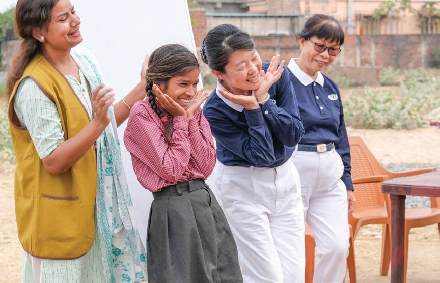
經過一段時間的關懷，簡單易懂的靜思語，讓孩子學會了感恩與付出，並得到了家長與教師的肯定。

孩子學會感恩。
印度是世界上用水問題最嚴重的國家之一，鄉村地區幾乎很難取得乾淨的水源。
除了塞納尼學校的水質較安全外，其他學校的水質均嚴重超標，不符合用水標準。
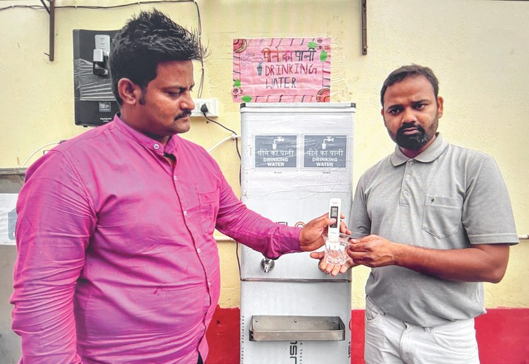
猜一猜閱讀引導
正常的水質數值是170，附近學校平均是多少？
「我們學校已經十年無水可用了，這十年間，廚房煮飯，孩子飲水，都得到外面去挑水回來。……」
加圖政府學校校長席夫浦詹表示・p.325
都要出去挑！
還協助加裝逆滲透過濾器，讓師生們都有乾淨的水可以飲用。
一杯茶，貼在額頭
一位校長自掏腰包辦學，志工幫他修屋頂、辦活動。閱讀引導
因不捨這裡的孩子們被父母驅使行乞，於是自掏腰包，再跟一些慈善單位募款，購地創建學校。

自己買地辦學校。
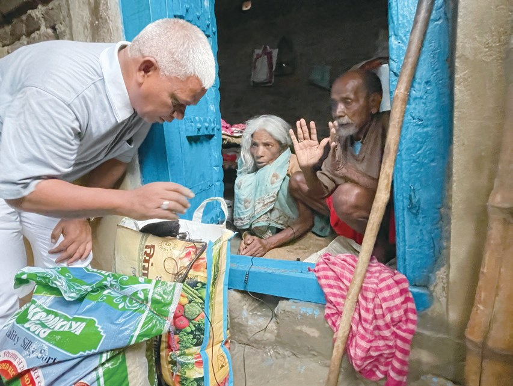
都在走廊和屋簷下克難的上課。且校內多處漏水，水泥經常成塊剝落，更有學生被石灰碎片波及……
施工期間，校長和老師們日日到場關懷修繕進度，終於在7月底順利完工。

不怕掉石灰了！
校長拉姆吉不希望學生錯過任何一堂人文課程，因此他會邀請已畢業的學生返校上人文課……
學生再以雙手輕輕地扶著老師的手掌，恭敬地放在自己的額頭眉心間，表達對老師最崇高的敬意。
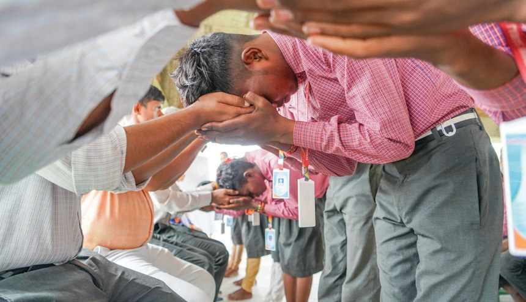
「慈濟讓我們的教育變得更加有吸引力，我們也學會鼓勵學生，啟發他們內心的愛來尊重老師、父母和鄰居……」
塞納尼學校的三多士老師說・p.327放在自己的額頭上。
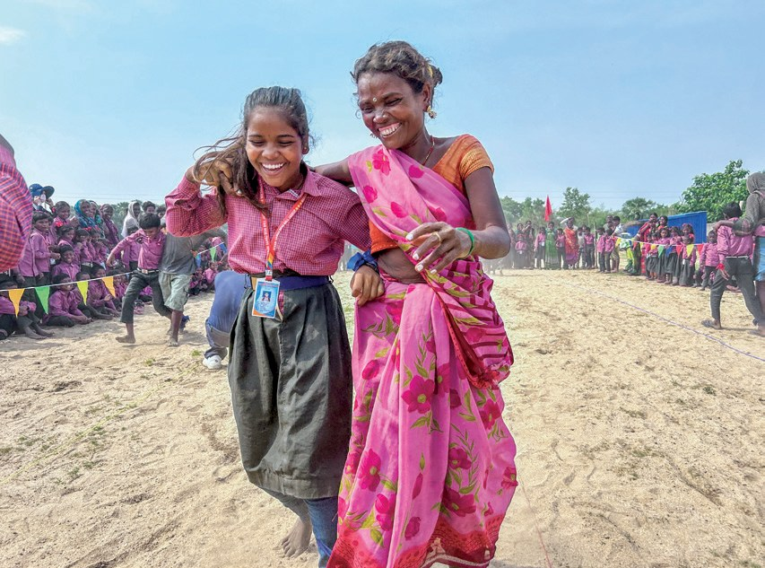
孩子們會將志工輕輕的幾句話，重重的放在心上……
大樹下就是教室
村莊沒有禮堂，志工就帶孩子到大樹下。閱讀引導
由於印度菩提迦耶的村莊大部分沒有禮堂，居民集會的地方常常是在大樹下。
「除非給我錢，我才送孩子一起來參與。」
也有家長說・p.329儘管有一些考驗，但志工們都不放棄，一家一戶持續邀約孩子們參與。

志工還是一家家去請。
並協助孩子剪指甲，到現在孩子們已經學會自己剪，不僅如此，還會幫比較小的孩子剪指甲。
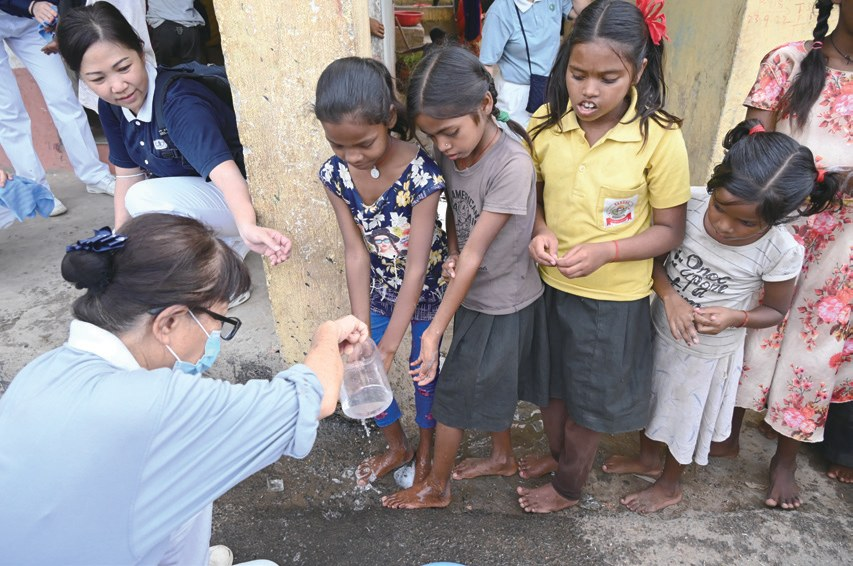
還幫弟弟妹妹剪！
- 4個村莊教育志工前往p.330
- 31場人文課輔p.330
- 998人次小孩參與p.330
從黑臉到笑臉
一位老師不再鞭打學生，一位老師放棄高薪。閱讀引導
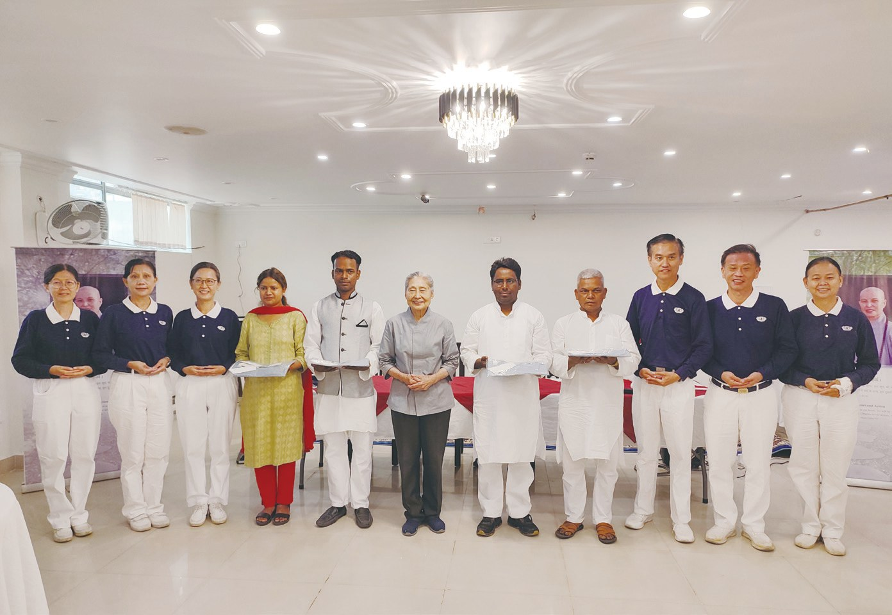
迪帕克開始當老師時很有教學熱忱，但在教書十多年後，漸漸對工作有麻木感……
「孩子們過去很怕我，因為我會鞭打學生，可是現在我帶著笑容來上課，將關懷融入在教學裡頭，學生反而願意接近我，一切就此改變。」
迪帕克說・p.332學生反而願意接近。
從穿上慈濟教聯會制服的那刻起，迪帕克已從黑臉老師，變成了笑臉老師……
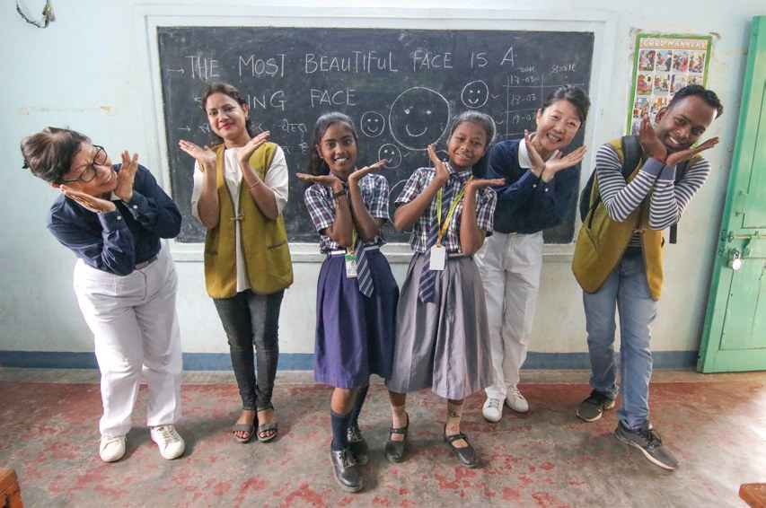
原本她因無法捨棄私立學校的優秀待遇而陷入兩難，不過在家人的支持下，以及被慈濟不遠千里而來的愛心而感動，她決定選擇在慈濟任教……
來教靜思語！
當她看到靜思語「最美的笑容是面帶微笑」時，讓她知道無論到什麼地方都要保持笑容……
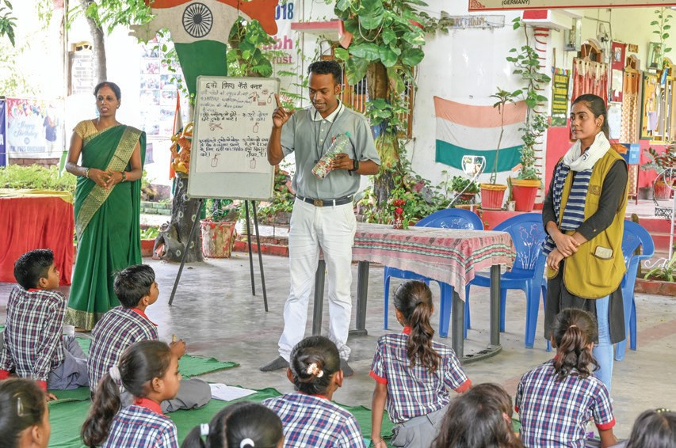
志工精心備課，有時候要用三週的時間教一句靜思語，才能讓學生理解意義。
菩提迦耶會所
一批批志工來了又來，終於有了自己的會所。閱讀引導
- 18所學校志工拜訪p.334
- 9,746人次惠及老師和學生p.334
- 38人次教育志工接力前來p.335
如今，志工有推動慈濟人文課的學校，孩子都會主動跟志工們打招呼、互道感恩。
很多志工來到菩提迦耶，都發願再回來，除了是報佛恩、報師恩，更是緣著人與人的這分情誼。
佛陀的故鄉依舊貧困，翻轉未來唯有靠教育……
上人開示・p.335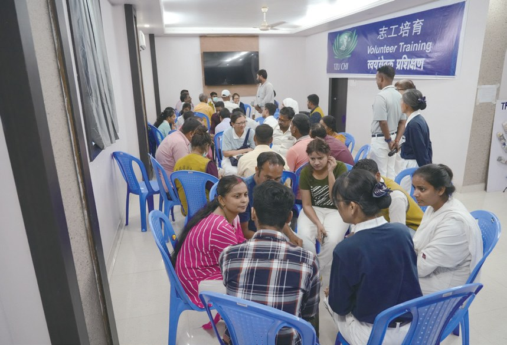
「我們發現，慈濟要在這裡深耕的話，就必須有聯絡點，也就是會所……」
志工蘇祈逢說・p.336不是設備太過老舊，就是衛生條件太差。
終於找到了。
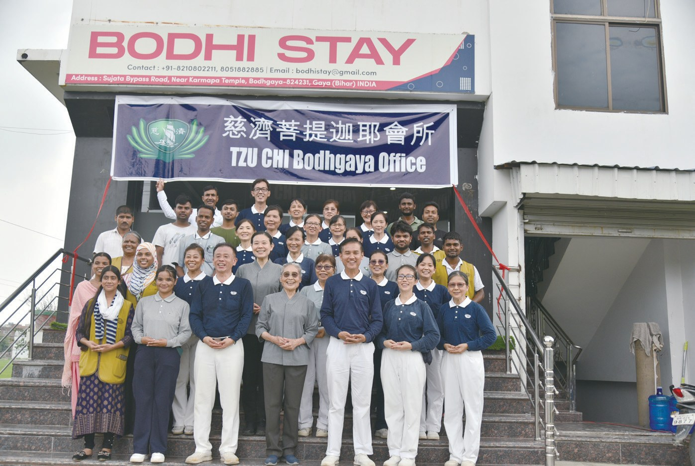
「……雖然只有六個月，卻能快速地複製他們在藍毘尼推動志業的經驗。現在有了會所，慈濟就能再往下耕耘。……」
林碧玉副總說・p.338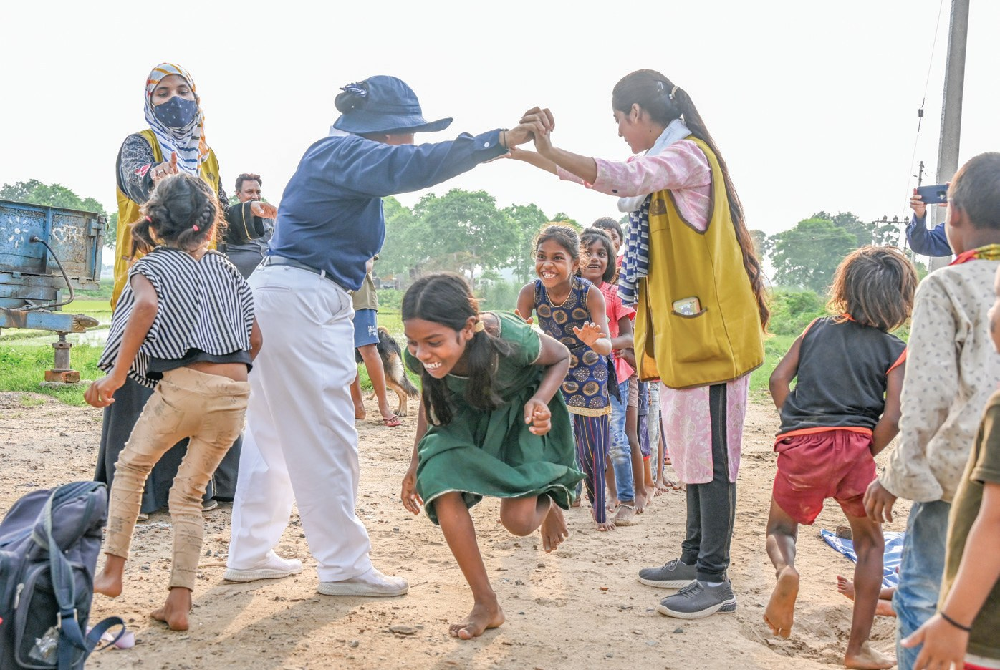
停一停：誰讓你記住了？閱讀引導
選一位你印象最深的人。沒有標準答案。
有人自己買地辦學，有人從黑臉變笑臉，有人放棄高薪。哪一位讓你最有感覺？

一起回頭看看吧～
回望
依本章原文整理，每一條都標了原書頁碼。閱讀引導
背後原因
為什麼要從校園做起

小川為什麼不只是發放物資？
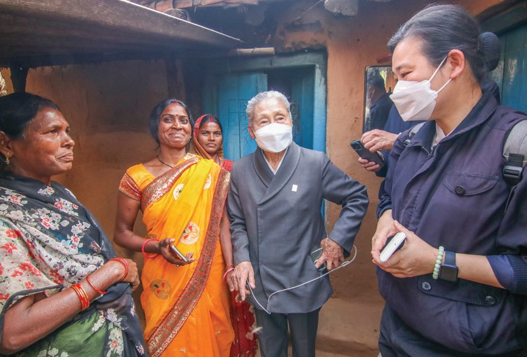
根深蒂固種姓制度雖已被廢除，但千百年來的思想已經根深蒂固。p.323
- 唯有教育
唯有教育才能翻轉人生。p.323
- 本土老師
讓本土的人文教師學習帶動教學，增加他們的信心。p.330
後續發展
菩提迦耶的一年

小禾短短幾個月，發生了哪些事？
- 2023.3.13
首次進入思龍加政府學校推廣靜思語。p.324
- 2023.3.17
測試學校水質。p.324
- 2023.5.30
教聯會授服典禮。p.331
- 2023.7.3
塞納尼學校舉辦敬師禮。p.327
- 2023.9.13
菩提迦耶會所成立。p.337
- 2023.10.15
第一次新進志工培育課程。p.335
學校的改變
以前和後來
小川志工走進校園後，有什麼不同？
- 十年無水可用有乾淨的水可以飲用p.325
- 走廊和屋簷下上課屋頂修繕完工p.326
- 衛生習慣普遍不佳自己剪指甲，還幫小的剪p.329
- 老師鞭打學生帶著笑容來上課p.332
以上只整理本章寫到的事；書裡沒寫到的，我們不替它下結論。
回頭看讀前的選擇閱讀引導
加圖政府學校十年無水可用（p.325）；迪帕克從黑臉老師變成笑臉老師（p.333）；志工一家一戶邀約孩子來樹下上課（p.329）。水、老師、孩子，志工一樣都沒放下。
志工為什麼不覺得慢？
只有你自己看得到喔！
準備好了就一起出發～